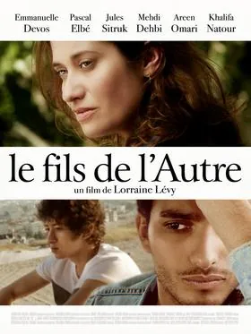

The genetics
The genetic element is DNA identification: a routine blood test before military service, followed by DNA testing, reveals that Joseph is not the biological son of the family that raised him, and the hospital traces the switch. The film uses this revelation to ask what makes identity, family and nationality: biological origin or upbringing. The two young men, each born on one side of the Israeli–Palestinian divide and raised on the other, must reconcile the families and peoples they were born into with those that shaped them, and the film suggests that both bonds matter, while exposing the arbitrariness of the hostility between the communities. Genetic testing is presented as an accurate, neutral tool whose results unsettle religious and national certainties; no geneticist plays a role.
The story
On a night of bombing in Haifa, a Franco-Israeli woman and a Palestinian woman give birth to sons in the same maternity hospital, and in the confusion of moving the babies to shelters, the boys are switched. Eighteen years later, Joseph Silberg is about to start his Israeli military service when routine tests show that his blood type does not match his parents'; DNA testing confirms that he is not their biological son. The hospital's investigation reveals the switch, and the Silbergs learn that their biological son is Yacine Al Bezaaz, raised by a Palestinian family in the West Bank. The fathers, Alon and Saïd, resist the truth, while the mothers, Orith and Leïla, are more ready to get to know the sons they bore. As Joseph and Yacine become friends, both families are forced to rethink their beliefs, prejudices and sense of identity against the backdrop of the Israeli–Palestinian conflict.